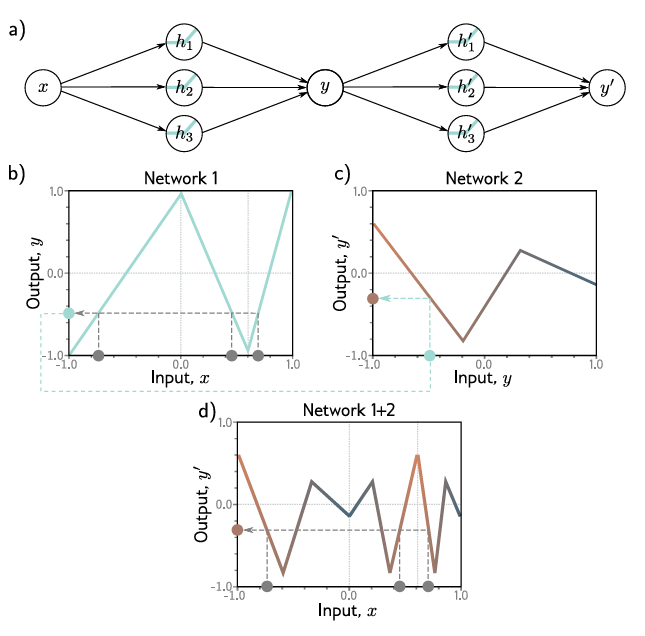
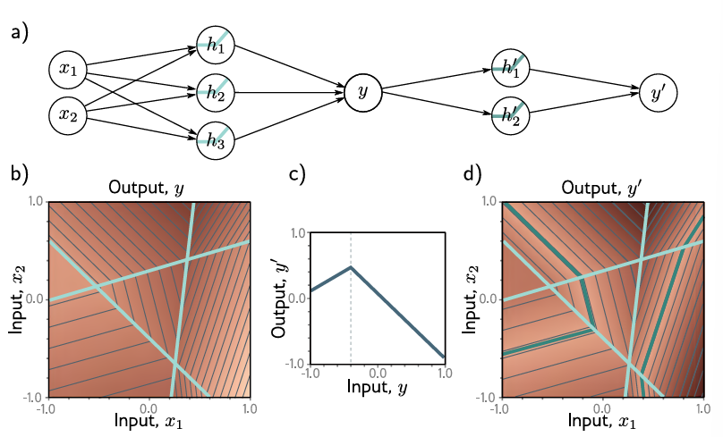
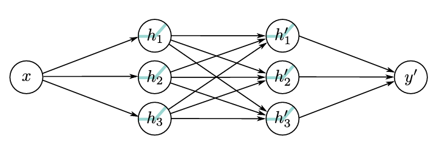
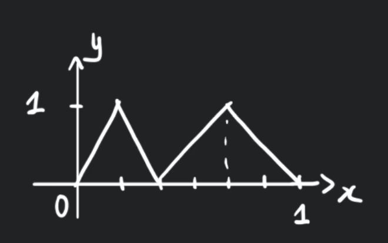
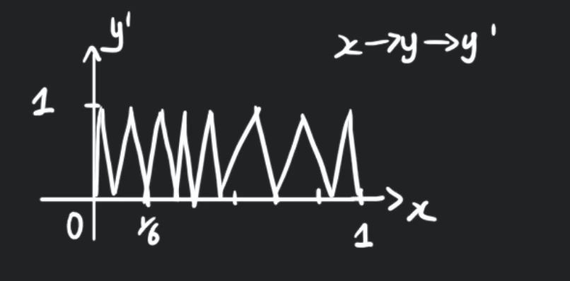

C4.Deep Neural Network
1.深层网络的映射过程
1.1.组装两个浅层网络
1.1.1.两个$\mathbb{R}^1 \rightarrow \mathbb{R}^1$
将两个$\mathbb{R}^1 \rightarrow \mathbb{R}^1$且3个隐藏层的浅层网络直接首尾相连，注意中间的y没有ReLU

上图中，Network1只有3个区域是因为还有一个关节在画面外
直接从$\mathbb{R}^1 \rightarrow \mathbb{R}^1$的角度理解，直线x折纸变换到直线y，再折纸变换到直线y'，第二次在恰当的位置折纸可以将折痕数加倍
1.1.2.一个$\mathbb{R}^2 \rightarrow \mathbb{R}^1$与一个$\mathbb{R}^1 \rightarrow \mathbb{R}^1$

将一个二维平面$(x_1,x_2)$折纸变换到直线$y$，再折纸变换到另一直线$y'$
可以观察，新折痕本身是一条折线，这比直线折痕能创造出更多区域
1.2.从浅层网络到深层网络
prop 两个$\mathbb{R}^1 \rightarrow \mathbb{R}^1$浅层网络拼接的过程可以写成一个拥有两个隐藏层的深层网络：
两个拼接的浅层网络倒数第二层可以写成这样：
拥有两个隐藏层的深层网络的倒数第二层可以写成这样：

可以看出，“两个拼接的浅层网络”是“两个隐藏层的深层网络”的一种特殊情况，这可以从倒数第二层的权值矩阵看出，前者的权值矩阵秩为1，后者是满秩的
1.3.深层网络
一个$\mathbb{R}^1 \rightarrow \mathbb{R}^1$两层隐藏层的深层网络可以写成如下形式：
第一层：
第二层：
输出层：
可以直接理解为：$h_1,h_2,h_3$是最开始的三种简单的折痕，这三种折痕再经过线性组合后再折了一次，得到$h_1',h_2',h_3'$三种复杂的折痕，最后做一个线性组合得到最终的折痕$y'$
1.4.总结
以折痕映射的图像进行思考，每一张图像都是$\mathbb{R}^D\rightarrow\mathbb{R}$，其中$D$是输入数据的维度，每叠加一层映射都会使图像又变回$\mathbb{R}^D\rightarrow\mathbb{R}$。单独观察每一层$\mathbb{R}^{D_i}\rightarrow\mathbb{R}$的图像，你只能看到的简单的折纸变换(仿射+ReLU)，但通过观察$\mathbb{R}^{D}\rightarrow\mathbb{R}$的图像，每一个节点的意义立刻显现出来。
2.深层网络的超参数与矩阵表示
2.1.超参数
假设隐藏层数量数为$K$，每一层节点数为$D_1,D_2,...,D_k$，这些就是超参数
2.2.矩阵表示
任意深层网络可以通过如下表示：
上述粗体表示的是列向量和矩阵，除了$a[x]$是广播运算，其余均为矩阵运算
3.深层网络VS浅层网络
3.1.分割区域的数量与参数的数量
一个$\mathbb{R}\rightarrow\mathbb{R}$的浅层网络with $D>2$个隐藏节点，可以通过$3D+1$个参数创造最多$D+1$个区域
一个$\mathbb{R}\rightarrow\mathbb{R}$的深层网络with $D>2$个隐藏节点和$K$层，可以通过$3D+1+(K-1)D(D+1)$个参数创造最多$(D+1)^K$个区域
| 网络名称 | 参数数量 | 分割区域上界 | | -------- | ------------------ | ------------ | | 浅层网络 | $3D+1$ | $D+1$ | | 深层网络 | $3D+1+(K-1)D(D+1)$ | $(D+1)^K$ |
要准确算出分割区域数量的最大值是一件很难的事情，if the number of hidden units $D$ in each of the $K$ layers is the same, and $D$ is an integer multiple of the input dimensionality $D_{I}$, then the maximum number of linear regions $N_r$ can be computed exactly and is:
Rmk 其实不应该看参数的数量，而应该看计算的数量，深层的计算量大概也是成倍的多于浅层的。
3.2.Depth efficiency
在相同精度下，有一些函数使用浅层神经网络拟合的效率指数级的低于深层神经网络，这被称为Depth efficiency。
3.3.大数据的输入
图像数据的维度可以轻易达到很大$\mathbb{R}^{n\times n}$，处理这样的数据需要深层的CNN
§Problems
Problem4.1
列出一些输入与输出：$(0.0,0.6),(-1.0,-0.8),(1.0,-0.8)$
Problem4.2
四个超参数 $K=3,D_1=4,D_2=2,D_3=3$
Problem4.3
trivial
Problem4.8折叠映射实例
必然会分割成四个区域：$(0,\frac16),(\frac16,\frac26),(\frac26,\frac46),(\frac46,1)$
令$\phi_0=\frac46,\phi_1=-2,\phi_2=1.5,\phi_3=-1$，可以得到这四个区域的斜率分别为$1,-1,0.5,-0.5$，输出的范围为$[0,\frac16]$。再将所有系数乘上6，可以让输出范围扩大到$[0,1]$，即$\phi_0=4,\phi_1=-12,\phi_2=8,\phi_3=-6$，当然斜率也发生变化了

如果将这个网络复制后首尾相接，会产生16个区域：当$x$从$0$移动到$\frac16$，$y$已经从$0$走到$1$了，再代回$x$得到的$y'$已经有四折了，剩下同理：

if we compose itself with $K$ times, obviously there will have $4^{K+1}$个线性区域
Problem4.9
当然可以，只要能自己设计函数，我可以轻易做到
Problem4.11
浅层网络$\mathbb{R}\rightarrow\mathbb{R}$拥有$D=95$个隐藏节点拥有参数数量：
深层网络$\mathbb{R}\rightarrow\mathbb{R}$ with $D=5,K=10$，拥有参数数量：
浅层网络可以制造$287$个区域，深层网络可以制造$6^9\times 6=6^{10}$个线性区域
但看乘法运算：浅层网络进行了$286\times 2$次，深层网络进行了$5+5+9\times5\times5=235$次，看上去深层网络似乎计算量更少